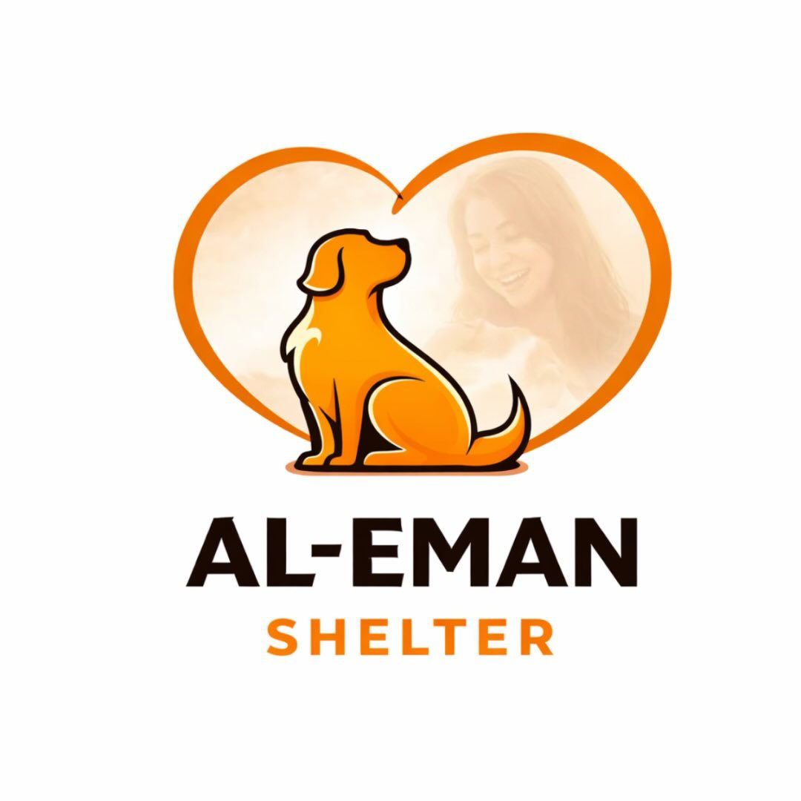

A Petly Initiative

Al-Eman Shelter
A place for dogs with special needs, chronic conditions, abandoned senior years, and quiet stories that too often get passed by.
Carrying forward Eman's love for the dogs others overlook.
Scroll to explore
Our Mission
Care shaped around dogs who need a gentler, steadier kind of rescue.
Special Needs Care
Daily support for dogs living with disabilities, chronic medical conditions, trauma, or recovery needs that ask for patience and consistency.
Senior Sanctuary
A safe landing for older dogs who have been abandoned late in life and deserve warmth, comfort, and unhurried companionship.
Rehabilitation
Physical, medical, and emotional recovery plans that help each rescue rebuild trust, stability, and strength one small step at a time.
Forever Foster
Long-term foster and adoption pathways for dogs who thrive best in loving homes prepared to meet their ongoing care needs.
Our Rescues
The dogs at the heart of Al-Eman Shelter.
Each story below is loaded from the shelter data file, so you can update names, stories, statuses, and photos without rebuilding the page structure.
Open Your Home
What these dogs still need most is a home that makes room for them.
Foster
Open your home temporarily for a dog who needs time, softness, and a family setting while treatment or transition continues.
Become a FosterAdopt
Offer a forever home to a rescue whose best next chapter begins with safety, understanding, and long-term commitment.
Start AdoptionFully Sponsored by Petly
Al-Eman Shelter is fully sponsored by Petly Veterinary Clinic.
Every cost — food, medical care, rehabilitation, and daily needs — is covered by our team, so the shelter can focus entirely on what matters: the dogs.
We don't ask for donations. We ask only for a loving home.
Visit Petly Clinic